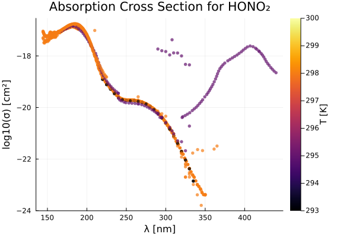
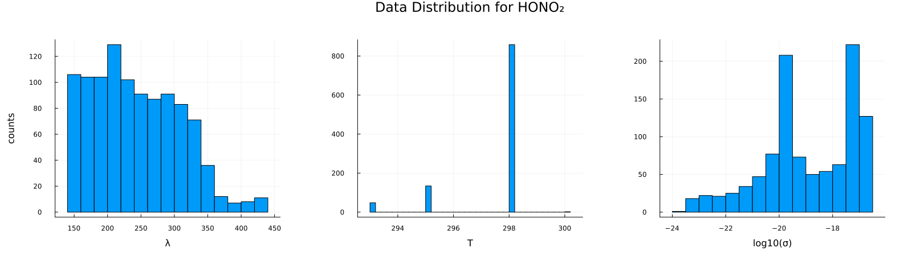
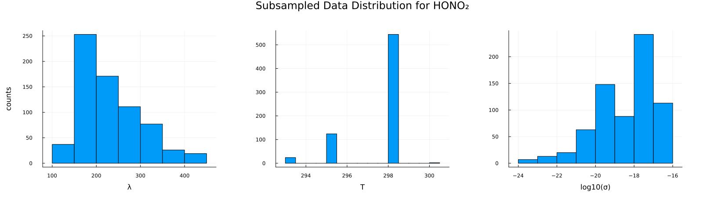
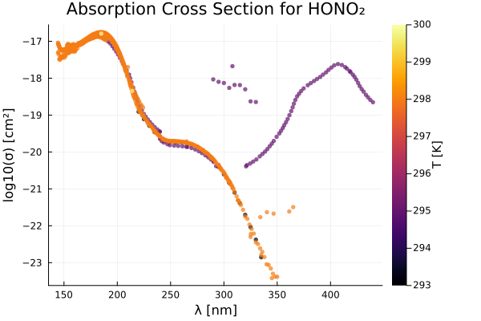
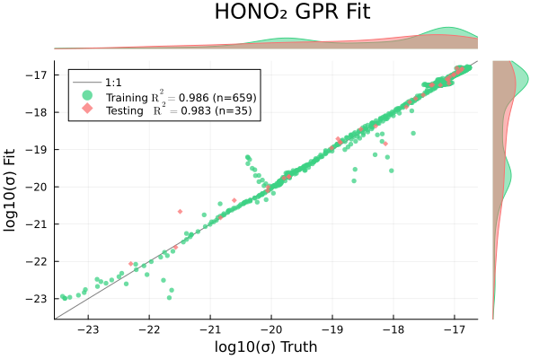
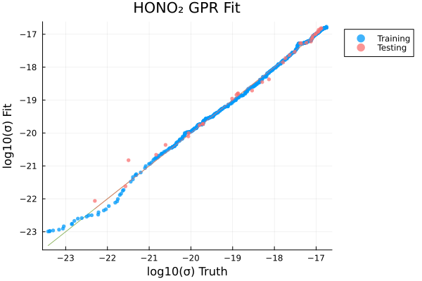
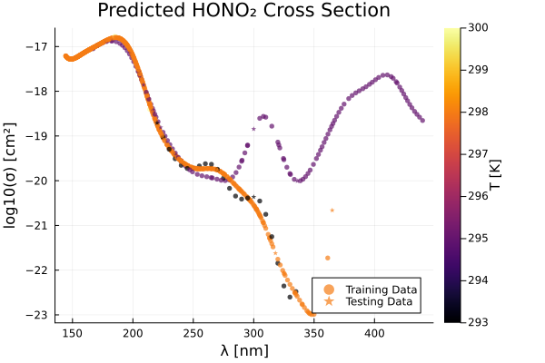
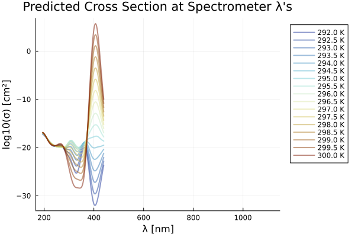

using Plots, MLPlotRecipes
using HDF5
using Tables, DataFrames, CSV
using MLJ, MLJGaussianProcesses
using StatsBase
using KernelFunctions
using ParameterHandling\(\mathrm{HONO_2}\) (Nitric Acid)
include("./utils.jl")predict_logσ_wΔh5_path = "../../data/photolysis_data.h5"
species = "HONO2"
nice_name = "HONO₂"
λs, σs, T1s, T2s, source_idx, T_units, category, formula, λ_units, σ_units = get_raw_data(h5_path, species)
println("max λ: ", maximum(λs))
println("min λ: ", minimum(λs))max λ: 439.81
min λ: 105.0# load in spectrometer wavelengths
hr4000_df = CSV.File("../hr4000_wavelengths.txt") |> DataFrame ; Δλ = 50 # nm for padding
df = data_to_df(λs, σs, T1s, T2s, source_idx; λ_lb=minimum(hr4000_df.λ)-Δλ, λ_ub=maximum(hr4000_df.λ)+Δλ)
# df = data_to_df(λs, σs, T1s, T2s, source_idx; λ_lb=0.0, λ_ub=1200.0)
println(nrow(df))
describe(df)10424×7 DataFrame
| Row | variable | mean | min | median | max | nmissing | eltype |
|---|---|---|---|---|---|---|---|
| Symbol | Float64 | Real | Float64 | Real | Int64 | DataType | |
| 1 | λ | 242.448 | 144.36 | 235.0 | 439.81 | 0 | Float64 |
| 2 | σ | 3.22399e-18 | 1.6e-24 | 9.335e-20 | 1.77e-17 | 0 | Float64 |
| 3 | T | 297.388 | 293.0 | 298.0 | 300.0 | 0 | Float64 |
| 4 | source_id | 21.1209 | 1 | 24.0 | 40 | 0 | Int64 |
nskip = 1
p2 = scatter(
df.λ[1:nskip:end],
log10.(df.σ[1:nskip:end]),
zcolor=df.T[1:nskip:end],
ms=3,
msw=0,
xlabel="λ [$(λ_units)]",
ylabel="log10(σ) [cm²]",
alpha=0.7,
rightmargin=10Plots.mm,
colorbar_title="T [$(T_units)]",
title="Absorption Cross Section for $(nice_name)",
label="",
)
savefig("O3_p2.png")
display(p2)
p1 = histogram(df.λ, xlabel="λ", ylabel="counts", label="",)
p2 = histogram(df.T, xlabel="T", label="",)
p3 = histogram(log10.(df.σ), xlabel="log10(σ)", label="",)
#p3 = histogram(df.σ, xlabel="σ", ylabel="counts")
phist = plot(p1, p2, p3, layout=(1,3), size=(1600, 450), margin=10Plots.mm, plot_title="Data Distribution for $(nice_name)")
# load in spectrometer wavelengths
hr4000_df = CSV.File("../hr4000_wavelengths.txt") |> DataFrame ; # deal with identical wavelength records
gdfs = groupby(df, :T)
res_dfs = []
for gdf ∈ gdfs
gdf_by_λ = groupby(gdf, :λ)
push!(res_dfs, combine(gdf_by_λ, [:σ, :T] .=> mean, renamecols = false))
end
df_unique = vcat(res_dfs...)694×3 DataFrame
669 rows omitted
| Row | λ | σ | T |
|---|---|---|---|
| Float64 | Float64 | Float64 | |
| 1 | 220.0 | 1.234e-19 | 293.0 |
| 2 | 225.0 | 7.73e-20 | 293.0 |
| 3 | 230.0 | 5.15e-20 | 293.0 |
| 4 | 235.0 | 3.44e-20 | 293.0 |
| 5 | 240.0 | 2.43e-20 | 293.0 |
| 6 | 245.0 | 2.0e-20 | 293.0 |
| 7 | 250.0 | 1.88e-20 | 293.0 |
| 8 | 255.0 | 1.82e-20 | 293.0 |
| 9 | 260.0 | 1.84e-20 | 293.0 |
| 10 | 265.0 | 1.73e-20 | 293.0 |
| 11 | 270.0 | 1.55e-20 | 293.0 |
| 12 | 275.0 | 1.36e-20 | 293.0 |
| 13 | 280.0 | 1.08e-20 | 293.0 |
| ⋮ | ⋮ | ⋮ | ⋮ |
| 683 | 214.04 | 5.8e-19 | 298.0 |
| 684 | 214.94 | 5.1e-19 | 298.0 |
| 685 | 215.89 | 4.4e-19 | 298.0 |
| 686 | 216.96 | 3.8e-19 | 298.0 |
| 687 | 218.11 | 3.2e-19 | 298.0 |
| 688 | 219.3 | 2.8e-19 | 298.0 |
| 689 | 220.51 | 2.4e-19 | 298.0 |
| 690 | 221.73 | 2.0e-19 | 298.0 |
| 691 | 222.97 | 1.8e-19 | 298.0 |
| 692 | 224.24 | 1.6e-19 | 298.0 |
| 693 | 184.95 | 1.61e-17 | 300.0 |
| 694 | 213.86 | 4.52e-19 | 300.0 |
# here is where we would do representative subsampling if there are too many records (> 2000)
# λ_idxs = representative_rand_sample(df_unique.λ, 500, 1500)
# T_idxs = representative_rand_sample(df_unique.λ, 5, 1000)
# σ_idxs = representative_rand_sample(log10.(df_unique.σ), 500, 2000)
# idxs_res = shuffle(unique(vcat(λ_idxs, T_idxs, σ_idxs)))
# df_sampled = df_unique[idxs_res, :]
df_sampled = df_unique
max_data_λ = maximum(df_sampled.λ)
min_data_λ = minimum(df_sampled.λ)
println(nrow(df_sampled))
describe(df_sampled)6943×7 DataFrame
| Row | variable | mean | min | median | max | nmissing | eltype |
|---|---|---|---|---|---|---|---|
| Symbol | Float64 | Float64 | Float64 | Float64 | Int64 | DataType | |
| 1 | λ | 230.114 | 144.36 | 212.045 | 439.81 | 0 | Float64 |
| 2 | σ | 4.30403e-18 | 3.8e-24 | 1.32e-18 | 1.77e-17 | 0 | Float64 |
| 3 | T | 297.297 | 293.0 | 298.0 | 300.0 | 0 | Float64 |
p1 = histogram(df_sampled.λ, xlabel="λ", ylabel="counts", label="", margin=10Plots.mm)
p2 = histogram(df_sampled.T, xlabel="T", label="", margin=10Plots.mm)
p3 = histogram(log10.(df_sampled.σ), xlabel="log10(σ)", label="", margin=10Plots.mm)
#p3 = histogram(df.σ, xlabel="σ", ylabel="counts")
phist = plot(p1, p2, p3, layout=(1,3), size=(1600, 450), plot_title="Subsampled Data Distribution for $(nice_name)")
# visualize pre-processed data:
p = scatter(
df_sampled.λ,
log10.(df_sampled.σ),
zcolor=df_sampled.T,
ms=3,
msw=0,
xlabel="λ [$(λ_units)]",
ylabel="log10(σ) [cm²]",
alpha=0.7,
rightmargin=10Plots.mm,
colorbar_title="T [$(T_units)]",
title="Absorption Cross Section for $(nice_name)",
label="",
)
train_frac = 0.95
ntrain = trunc(Int, train_frac * nrow(df_sampled))
println(ntrain)659idxs = shuffle(1:nrow(df_sampled))
idxs_train = idxs[1:ntrain]
idxs_test = idxs[ntrain+1:end]
Xtrain = df_sampled[idxs_train, [:λ, :T]]
Xtest = df_sampled[idxs_test, [:λ, :T]]
ytrain = log10.(df_sampled.σ[idxs_train])
ytest = log10.(df_sampled.σ[idxs_test])
# gpr = GPR(σ²=0.00001)
θ_init = (σf² = positive(15.0), ℓ = positive(0.1))
gpr = GPR(
θ_init=θ_init,
σ²=15.0
)
# gpr = GPR(σ²=10.0)
mach = machine(gpr, Xtrain, ytrain) |> fit![ Info: Training machine(GPR(μ = 0.0, …), …).Iter Function value Gradient norm
0 5.389194e+03 1.704289e+03
* time: 0.0003800392150878906
1 3.892841e+03 1.756169e+02
* time: 0.6997840404510498
2 8.206897e+02 1.564607e+02
* time: 1.0073180198669434
3 7.831162e+02 2.109498e+02
* time: 1.136052131652832
4 6.030653e+02 1.193581e+03
* time: 1.273569107055664
5 3.177435e+02 1.266892e+02
* time: 1.3636581897735596
6 8.676273e+01 9.320786e+01
* time: 1.4903090000152588
7 7.129049e+01 1.482112e+02
* time: 1.5765831470489502
8 5.720006e+01 3.508048e+01
* time: 1.7037830352783203
9 2.711679e+01 1.239238e+02
* time: 1.8643360137939453
10 2.097125e+01 8.523067e+01
* time: 1.9873530864715576
11 2.011217e+01 9.380212e+00
* time: 2.070857048034668
12 1.983636e+01 9.564712e-01
* time: 2.197728157043457
13 1.983446e+01 3.300201e-02
* time: 2.285853147506714
14 1.983446e+01 1.828179e-03
* time: 2.3759679794311523
15 1.983445e+01 1.432399e-05
* time: 2.4596471786499023
16 1.983446e+01 6.408870e-05
* time: 2.6194071769714355
17 1.983446e+01 3.121396e-05
* time: 2.741403102874756
18 1.983446e+01 5.919258e-05
* time: 2.8273701667785645
19 1.983446e+01 7.948191e-06
* time: 3.032626152038574
20 1.983446e+01 4.395035e-05
* time: 3.279585123062134
21 1.983446e+01 1.992396e-05
* time: 3.3643670082092285
22 1.983446e+01 2.224675e-05
* time: 3.4520931243896484
23 1.983446e+01 4.195639e-05
* time: 3.6124660968780518
24 1.983445e+01 5.599013e-05
* time: 3.7747561931610107
25 1.983446e+01 3.715702e-05
* time: 3.8958230018615723
26 1.983446e+01 3.034092e-05
* time: 3.977992057800293
27 1.983446e+01 4.515391e-05
* time: 4.1034910678863525
28 1.983446e+01 4.409504e-06
* time: 4.188642978668213
29 1.983445e+01 6.739955e-05
* time: 4.309635162353516
30 1.983446e+01 3.068410e-05
* time: 4.543415069580078
31 1.983446e+01 6.901787e-05
* time: 4.62653112411499
32 1.983446e+01 2.271639e-05
* time: 4.710143089294434
33 1.983446e+01 3.956624e-04
* time: 4.841377019882202
34 1.983445e+01 5.562000e-05
* time: 4.933320999145508
35 1.983445e+01 1.148762e-05
* time: 5.028364181518555
36 1.983446e+01 1.128132e-05
* time: 5.237593173980713
37 1.983445e+01 2.376054e-05
* time: 5.329969167709351
38 1.983446e+01 7.049966e-06
* time: 5.520186185836792
39 1.983446e+01 1.350097e-06
* time: 5.6305930614471436
40 1.983446e+01 1.169760e-05
* time: 5.9635961055755615
41 1.983445e+01 3.944519e-06
* time: 6.200436115264893
42 1.983446e+01 5.822033e-06
* time: 6.444451093673706
43 1.983445e+01 6.461922e-06
* time: 6.870376110076904
44 1.983445e+01 2.380974e-05
* time: 6.952156066894531
45 1.983446e+01 5.344767e-06
* time: 7.075813055038452
46 1.983446e+01 4.010673e-05
* time: 7.164421081542969
47 1.983446e+01 1.815051e-05
* time: 7.368705987930298
48 1.983446e+01 1.394486e-05
* time: 7.4939610958099365
49 1.983446e+01 1.391746e-05
* time: 7.619117975234985
50 1.983446e+01 1.679084e-05
* time: 7.784213066101074
51 1.983445e+01 3.652309e-06
* time: 7.8732781410217285
52 1.983446e+01 1.974630e-05
* time: 7.955857992172241
53 1.983446e+01 2.506440e-05
* time: 8.080718040466309
54 1.983446e+01 3.053361e-05
* time: 8.321099996566772
55 1.983446e+01 2.946306e-05
* time: 8.485481023788452
56 1.983445e+01 1.350579e-05
* time: 8.56895112991333
57 1.983446e+01 3.023491e-05
* time: 8.65270709991455
58 1.983445e+01 6.385561e-05
* time: 8.813830137252808
59 1.983446e+01 4.043133e-05
* time: 8.896552085876465
60 1.983446e+01 4.044188e-06
* time: 8.985464096069336
61 1.983446e+01 4.612962e-06
* time: 9.085438966751099
62 1.983445e+01 1.262481e-05
* time: 9.191694974899292
63 1.983446e+01 1.950908e-05
* time: 9.341469049453735
64 1.983446e+01 2.519288e-05
* time: 9.541692972183228
65 1.983446e+01 2.614228e-05
* time: 9.665112018585205
66 1.983446e+01 1.945801e-05
* time: 9.75084114074707
67 1.983446e+01 9.071024e-06
* time: 9.880848169326782
68 1.983446e+01 1.979008e-05
* time: 9.968780994415283
69 1.983446e+01 1.422883e-06
* time: 10.10214114189148
70 1.983446e+01 4.877303e-05
* time: 10.279929161071777
71 1.983446e+01 2.404621e-05
* time: 10.448952198028564
72 1.983446e+01 2.987453e-05
* time: 10.802158117294312
73 1.983446e+01 4.754859e-05
* time: 10.966202974319458
74 1.983446e+01 1.286393e-05
* time: 11.062036037445068
75 1.983445e+01 7.668128e-06
* time: 11.167163133621216
76 1.983446e+01 1.976981e-05
* time: 11.51499319076538
77 1.983446e+01 9.631178e-06
* time: 11.622436046600342
78 1.983446e+01 1.899231e-06
* time: 11.763148069381714
79 1.983445e+01 5.074514e-06
* time: 11.969125032424927
80 1.983446e+01 1.673984e-05
* time: 12.319956064224243
81 1.983445e+01 2.230648e-05
* time: 12.489605188369751
82 1.983446e+01 1.387556e-05
* time: 12.580227136611938
83 1.983445e+01 1.215188e-05
* time: 12.71316909790039
84 1.983446e+01 4.117880e-06
* time: 13.032498121261597
85 1.983446e+01 4.745608e-05
* time: 13.122514963150024
86 1.983445e+01 6.725217e-05
* time: 13.208676099777222
87 1.983446e+01 2.412667e-05
* time: 13.338306188583374
88 1.983446e+01 3.782189e-06
* time: 13.471238136291504
89 1.983446e+01 3.264031e-06
* time: 13.672458171844482
90 1.983446e+01 6.671000e-06
* time: 13.956714153289795
91 1.983446e+01 4.109625e-06
* time: 14.086172103881836
92 1.983446e+01 1.136870e-05
* time: 14.285701990127563
93 1.983446e+01 3.383610e-05
* time: 14.417580127716064
94 1.983446e+01 5.483849e-06
* time: 14.507683038711548
95 1.983446e+01 4.579402e-06
* time: 14.595638990402222
96 1.983446e+01 3.951906e-06
* time: 14.796127080917358
97 1.983446e+01 2.750639e-05
* time: 14.887478113174438
98 1.983446e+01 3.791229e-05
* time: 15.052074193954468
99 1.983446e+01 1.067198e-05
* time: 15.206470966339111
100 1.983446e+01 3.820954e-05
* time: 15.334894180297852
101 1.983446e+01 1.940477e-06
* time: 16.258082151412964
102 1.983446e+01 7.656860e-06
* time: 16.34553813934326
103 1.983445e+01 3.921294e-05
* time: 17.76721715927124
104 1.983446e+01 8.978670e-06
* time: 17.854912996292114
105 1.983446e+01 2.166370e-06
* time: 18.124361991882324
106 1.983446e+01 5.790144e-06
* time: 18.560968160629272
107 1.983445e+01 6.405042e-05
* time: 18.680957078933716
108 1.983446e+01 9.636265e-05
* time: 18.846309185028076
109 1.983446e+01 5.879651e-05
* time: 18.929336071014404
110 1.983446e+01 1.105818e-05
* time: 19.204828023910522
111 1.983446e+01 1.245554e-05
* time: 19.29456615447998
112 1.983445e+01 2.678044e-05
* time: 19.386182069778442
113 1.983445e+01 2.437964e-05
* time: 19.5821750164032
114 1.983446e+01 2.221634e-05
* time: 19.707502126693726
115 1.983445e+01 5.339992e-06
* time: 19.793768167495728
116 1.983446e+01 4.999439e-06
* time: 19.912392139434814
117 1.983446e+01 6.938214e-06
* time: 19.997387170791626
118 1.983446e+01 1.183530e-05
* time: 20.12971305847168
119 1.983446e+01 1.920489e-05
* time: 20.595141172409058
120 1.983446e+01 8.058350e-05
* time: 20.6888689994812
121 1.983446e+01 6.661694e-05
* time: 20.77754807472229
122 1.983446e+01 5.126453e-05
* time: 20.86351203918457
123 1.983445e+01 3.446940e-06
* time: 20.9848849773407
124 1.983446e+01 1.016353e-05
* time: 21.267665147781372
125 1.983446e+01 4.523666e-05
* time: 21.354351043701172
126 1.983446e+01 9.274598e-05
* time: 21.443754196166992
127 1.983446e+01 2.914324e-05
* time: 21.527671098709106
128 1.983446e+01 2.317653e-05
* time: 21.64771819114685
129 1.983446e+01 6.856144e-06
* time: 21.810769081115723
130 1.983446e+01 1.034043e-06
* time: 21.892779111862183
131 1.983446e+01 5.007949e-06
* time: 21.97739601135254
132 1.983446e+01 3.695048e-05
* time: 22.25095796585083
133 1.983445e+01 1.828912e-05
* time: 22.491425037384033
134 1.983445e+01 3.823637e-05
* time: 22.662357091903687
135 1.983446e+01 9.190579e-06
* time: 22.784998178482056
136 1.983445e+01 4.724840e-05
* time: 22.91102910041809
137 1.983446e+01 1.248041e-05
* time: 23.03135919570923
138 1.983446e+01 1.768625e-05
* time: 23.23192811012268
139 1.983446e+01 5.827127e-06
* time: 23.353940963745117
140 1.983446e+01 4.356441e-05
* time: 23.5171000957489
141 1.983446e+01 3.097258e-05
* time: 23.59873914718628
142 1.983446e+01 1.719610e-05
* time: 23.683438062667847
143 1.983446e+01 1.483075e-05
* time: 23.81331515312195
144 1.983446e+01 5.805256e-06
* time: 23.89831805229187
145 1.983446e+01 2.548681e-05
* time: 24.017348051071167
146 1.983446e+01 1.808671e-05
* time: 24.100301027297974
147 1.983445e+01 4.626350e-05
* time: 24.226116180419922
148 1.983446e+01 3.184406e-05
* time: 24.356281995773315
149 1.983446e+01 2.329531e-05
* time: 24.443830013275146
150 1.983445e+01 4.808823e-05
* time: 24.677605152130127
151 1.983446e+01 4.681322e-05
* time: 24.80640411376953
152 1.983446e+01 3.974927e-05
* time: 24.92716407775879
153 1.983445e+01 9.143039e-06
* time: 25.049740076065063
154 1.983445e+01 5.613959e-06
* time: 25.13330316543579
155 1.983446e+01 5.207250e-06
* time: 25.22094202041626
156 1.983446e+01 2.061938e-05
* time: 25.345108032226562
157 1.983446e+01 5.977894e-06
* time: 25.471525192260742
158 1.983446e+01 6.163979e-05
* time: 25.629326105117798
159 1.983446e+01 3.376742e-05
* time: 25.71318507194519
160 1.983446e+01 4.202865e-06
* time: 25.896385192871094
161 1.983445e+01 1.296250e-05
* time: 26.02214503288269
162 1.983445e+01 7.241178e-05
* time: 26.104708194732666
163 1.983445e+01 3.988956e-05
* time: 26.344237089157104
164 1.983446e+01 4.994181e-05
* time: 26.474622011184692
165 1.983446e+01 4.711729e-05
* time: 26.558045148849487
166 1.983446e+01 1.071617e-05
* time: 26.683688163757324
167 1.983446e+01 6.926934e-05
* time: 26.904996156692505
168 1.983446e+01 2.106037e-05
* time: 26.99879503250122
169 1.983446e+01 3.222489e-05
* time: 27.090938091278076
170 1.983446e+01 4.587028e-05
* time: 27.184112071990967
171 1.983446e+01 1.870604e-05
* time: 27.283300161361694
172 1.983446e+01 2.946671e-06
* time: 27.415889978408813
173 1.983446e+01 1.498529e-06
* time: 27.54630708694458
174 1.983446e+01 2.817544e-05
* time: 27.629215002059937
175 1.983445e+01 7.698150e-05
* time: 27.713996171951294
176 1.983446e+01 1.163586e-05
* time: 27.83504819869995
177 1.983446e+01 3.207770e-05
* time: 27.99704098701477
178 1.983446e+01 4.076115e-06
* time: 28.171661138534546
179 1.983446e+01 1.317769e-05
* time: 28.273728132247925
180 1.983446e+01 2.547261e-05
* time: 28.449135065078735
181 1.983445e+01 2.837596e-05
* time: 28.655426025390625
182 1.983446e+01 9.235380e-05
* time: 28.816826105117798
183 1.983446e+01 1.949163e-05
* time: 28.939228057861328
184 1.983446e+01 3.942804e-06
* time: 29.17320418357849
185 1.983446e+01 1.466254e-05
* time: 29.260475158691406trained Machine; caches model-specific representations of data
model: GPR(μ = 0.0, …)
args:
1: Source @194 ⏎ Table{AbstractVector{Continuous}}
2: Source @196 ⏎ AbstractVector{Continuous}rpt = report(mach)
println(rpt)
y_pred_train = predict_mean(mach, Xtrain);
y_pred_test = predict_mean(mach, Xtest);(summary = "L-BFGS", minimizer = [9.794729290886092, 1.381359863158764, -3.321866312373246], minimum = 19.83445622020116, iterations = 186, converged = false)p = scatterresult(
ytrain, y_pred_train,
ytest, y_pred_test,
xlabel="log10(σ) Truth",
ylabel="log10(σ) Fit",
plot_title="$(nice_name) GPR Fit"
)
p = quantilequantile(
ytrain, y_pred_train,
ytest, y_pred_test,
xlabel="log10(σ) Truth",
ylabel="log10(σ) Fit",
title="$(nice_name) GPR Fit"
)
p1 = scatter(
Xtrain.λ,
y_pred_train,
zcolor=Xtrain.T,
ms=3,
msw=0,
xlabel="λ [$(λ_units)]",
ylabel="log10(σ) [cm²]",
alpha=0.7,
rightmargin=10Plots.mm,
colorbar_title="T [$(T_units)]",
label="Training Data",
)
scatter!(
Xtest.λ,
y_pred_test,
zcolor=Xtest.T,
ms=3,
msw=0,
# markershape=:rect,
markershape=:star5,
xlabel="λ [$(λ_units)]",
ylabel="log10(σ) [cm²]",
alpha=0.7,
rightmargin=10Plots.mm,
colorbar_title="T [$(T_units)]",
title="Predicted $(nice_name) Cross Section",
label="Testing Data",
)
λ_min = maximum([min_data_λ, minimum(hr4000_df.λ)])
λ_max = minimum([max_data_λ, maximum(hr4000_df.λ)])
println(λ_min)
println(λ_max)
p = plot()
Ts = 292.0:0.5:300.0
# cs = cgrad(:thermal, Ts, categorical = true)
cs = cgrad(:roma, size(Ts,1), categorical = true, rev=true)
i = 1
for T ∈ Ts
logσ = predict_logσ(T, hr4000_df, mach, (λ_min, λ_max))
plot!(
hr4000_df.λ, logσ,
linewidth=2,
alpha=0.5,
color=cs[i],
label="$(T) K",
legend=:outertopright,
)
i+=1
end
xlabel!("λ [nm]")
ylabel!("log10(σ) [cm²]")
title!("Predicted Cross Section at Spectrometer λ's")194.249
439.81
Tplot = 298.0
logσ, Δlogσ = predict_logσ_wΔ(Tplot, hr4000_df, mach, (λ_min, λ_max))
p1 = plot(
hr4000_df.λ, logσ,
ribbon= 2 .* Δlogσ,
fillalpha=0.5,
linewidth=2,
xlabel="λ [nm]",
ylabel="log10(σ) [cm²]",
title="Predicted log10(σ) at T = $(Tplot) K",
label="",
)
Tplot = 294.0
logσ, Δlogσ = predict_logσ_wΔ(Tplot, hr4000_df, mach, (λ_min, λ_max))
p2 = plot(
hr4000_df.λ, logσ,
ribbon= 2 .* Δlogσ,
fillalpha=0.5,
linewidth=2,
color=:purple,
xlabel="λ [nm]",
ylabel="log10(σ) [cm²]",
title="Predicted log10(σ) at T = $(Tplot) K",
label=""
)
plot(p1, p2, layout=(1,2), margin=5Plots.mm, size=(900,350))